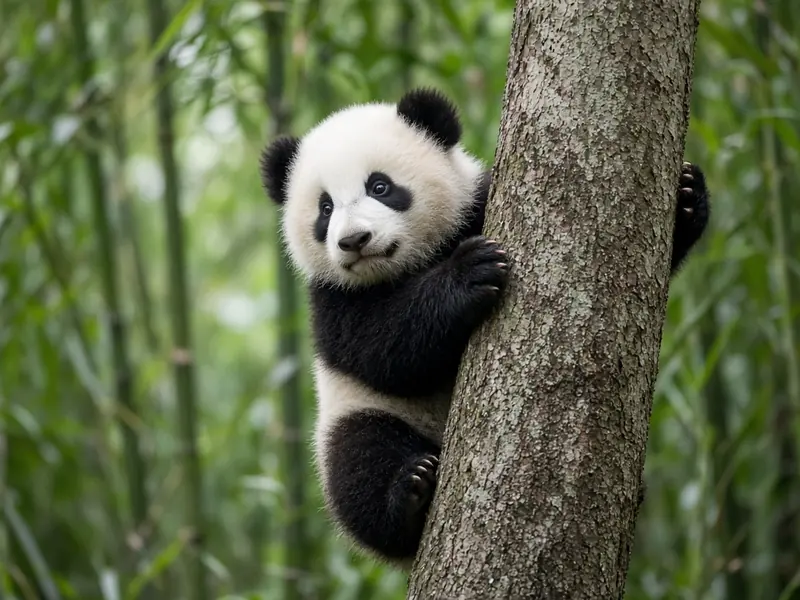

Why are baby pandas so small?
A newborn giant panda is astonishingly small. Smithsonian's National Zoo puts a newborn cub at 3 to 5 ounces, about the size of a stick of butter and roughly 1/900th the size of its mother. Pink, nearly hairless and blind, it is the smallest newborn relative to its mother of any mammal apart from marsupials. The best current explanation, from skeletal scans of newborn bears, is that giant pandas have a relatively short pregnancy after the embryo implants, so the cub is born at an early stage of development.

Just how small is a panda cub?
An adult female giant panda is a large animal, so a cub of a few ounces is an extreme mismatch. Smithsonian's National Zoo describes the newborn as helpless: its eyes do not open for weeks, and it depends on its mother for warmth, food and protection. Bears as a family already have some of the lowest newborn to mother mass ratios among placental mammals, and the giant panda sits at the far end of that range. You can read more about adult size and life history on our giant panda pillar page.
What the skeletons reveal
In 2020, Peishu Li and Kathleen K. Smith published a study in the Journal of Anatomy that used micro computed tomography to scan the skeletons of newborn bears and compare them with newborns of related carnivores, such as dogs. The question was simple: are bear babies unusually immature, or just unusually small?
For most bears the answer was small, not immature. Newborns of the ursine bears, the group that includes brown and black bears, had levels of bone formation similar to other carnivore newborns. Their main oddity was the huge gap between newborn and adult size.
The giant panda was different. Perinatal giant pandas had skeletal maturity most similar to a beagle fetus at 42 to 45 days, about 70 percent of the way through a beagle pregnancy. In other words, a panda cub is born with a skeleton that, in a dog, would still be developing in the womb.
That does not make pandas marsupial like, a popular claim online. Li and Smith found no bear with the particular skeletal timing seen in marsupial development. Panda cubs are extremely underdeveloped placental mammals, not pouch babies in disguise.
So why is the cub born so early?
Li and Smith reviewed the existing ideas for why bears have such tiny young. For bears in general, they suggest the small newborn to mother ratio may reflect large adult body size evolving relatively recently, while reproductive and life history traits kept an older, ancestral pattern. For the giant panda in particular, they suggest a relatively short gestation after implantation may be the direct mechanism behind both the cub's small size and its immature skeleton.
Timing also matters at the scale of the year. Spady, Lindburg and Durrant (2007, Mammal Review) reviewed reproduction across the bear family and found that seven of the eight living species have distinct mating and birth seasons, which they interpret as an adaptation to seasonal environments. A small cub born in a predictable season, then raised intensively in a den, fits that wider bear pattern.
Life in the den
A tiny, immature newborn needs a great deal of care, and wild giant panda mothers provide it. Zhu, Lindburg, Pan, Forney and Wang (2001, Journal of Zoology) followed six wild females in the Qinling Mountains of Shaanxi Province from 1989 into early 1995. Pregnant females moved to lower elevations ahead of other pandas to find birthing dens. One mother was filmed with her cub from birth until the end of denning at 94 days.
Early on, the cub stayed on its mother's body almost continuously, and mothers were seen fasting for up to three weeks after giving birth. Every mother moved her cub to a new den three or four times during the season. By about 3 to 4 months, cubs left the den fully furred and able to handle winter temperatures. The researchers concluded that wild panda reproduction strongly resembles that of other bears, which is a useful reminder that giant pandas are true bears despite their bamboo diet (see how much bamboo a panda eats).
Why it matters for conservation
Raising one helpless cub takes months of maternal effort, which is one reason panda populations recover slowly from losses. Smithsonian's National Zoo notes that this slow reproduction makes it hard for the species to bounce back from habitat loss and other human related mortality. The IUCN Red List currently lists the giant panda as Vulnerable; our conservation overview and the article are giant pandas still endangered? explain what changed and what threats remain.
For more on how pandas spend the year, including why they do not hibernate like many other bears, read do pandas hibernate?, and for another surprising feature of panda anatomy see do pandas have thumbs?.
Frequently asked questions
How big is a newborn giant panda?
Smithsonian's National Zoo says a newborn cub weighs 3 to 5 ounces, is about the size of a stick of butter, and is roughly 1/900th the size of its mother.
Are giant panda cubs the smallest newborns of any mammal?
Relative to the mother's size, Smithsonian's National Zoo says the giant panda newborn is the smallest of any mammal except marsupials such as kangaroos and opossums.
Is a newborn panda like a marsupial?
Not in its bones. A 2020 micro computed tomography study found that no bear, including the giant panda, shows the skeletal development pattern of marsupials (Li and Smith 2020, Journal of Anatomy).
How underdeveloped is a newborn panda's skeleton?
Li and Smith found that perinatal giant pandas had skeletal maturity most similar to a beagle fetus at 42 to 45 days, about 70 percent of the way through a beagle pregnancy.
Why are panda cubs born so small?
Li and Smith suggest a relatively short gestation after the embryo implants may be the direct reason giant panda newborns are so small and skeletally immature. For bears in general, they suggest the tiny newborn to mother ratio reflects large adult body size evolving recently while life history traits stayed ancestral.
When do panda cubs leave the den?
In the wild Qinling Mountains study by Zhu and colleagues (2001), cubs left the den at about 3 to 4 months old, fully furred and able to cope with winter temperatures.
Sources
- Li, P. and Smith, K. K. (2020), Comparative skeletal anatomy of neonatal ursids and the extreme altriciality of the giant panda, Journal of Anatomy 236(4): 724 to 736. DOI 10.1111/joa.13127
- Zhu, X., Lindburg, D. G., Pan, W., Forney, K. A. and Wang, D. (2001), The reproductive strategy of giant pandas (Ailuropoda melanoleuca): infant growth and development and mother infant relationships, Journal of Zoology 253(2): 141 to 155. DOI 10.1017/S0952836901000139
- Spady, T. J., Lindburg, D. G. and Durrant, B. S. (2007), Evolution of reproductive seasonality in bears, Mammal Review 37(1): 21 to 53. DOI 10.1111/j.1365-2907.2007.00096.x
- Smithsonian's National Zoo and Conservation Biology Institute: Giant panda
- IUCN Red List: Giant panda, Ailuropoda melanoleuca (2016 assessment)
Cite this page
APA
PandasWise. (2026, October 14). Why are baby pandas so small? https://pandaswise.com/blog/why-are-baby-pandas-so-small.html
MLA
"Why are baby pandas so small?" PandasWise, 14 Oct. 2026, https://pandaswise.com/blog/why-are-baby-pandas-so-small.html.
Chicago
PandasWise. "Why are baby pandas so small?" PandasWise. October 14, 2026. https://pandaswise.com/blog/why-are-baby-pandas-so-small.html.